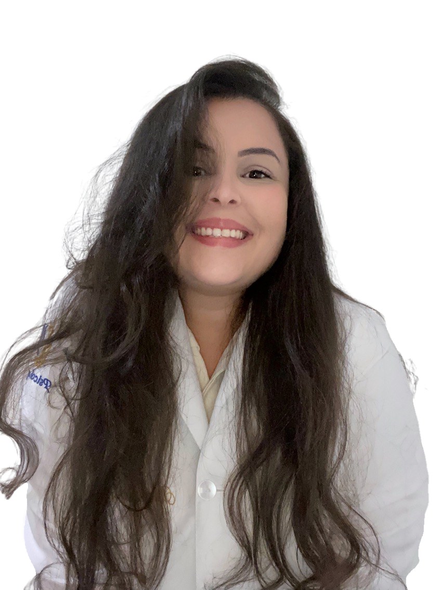

Seja bem-vindo(a)!
Seja bem-vindo(a)!
Aqui todas as relações que você possui com o mundo importam!
Procurar ajuda é uma atitude corajosa que demonstra força em querer fazer algo diferente com o rumo da sua história. Por mais que a vida nos apresente bons momentos, também vivenciamos conflitos, incertezas, dificuldades, situações nebulosas, problemas, sofrimento e sintomas.
No processo psicoterapêutico podemos desenvolver habilidades de enfrentamento, aprender a reconhecer e lidar com nossas emoções, cuidar de traumas e transtornos, desconstruir padrões, romper comportamentos disfuncionais, ressignificar paradigmas, descobrir e fortalecer potencialidades, promover consciência dos desejos, perceber novas compreensões do ambiente, apropriar-se de si e da responsabilidade perante a vida.
Te convido a iniciar uma jornada de descobertas e autocuidado!

Sou Ayla Garrido de Macedo Criado, Psicóloga Clínica, Pós-graduanda pela FMU em Neuropsicologia, formação em Terapia Cognitiva Comportamental, especialista em relacionamento interpessoal, psicopatologias (transtornos psicológicos, como ansiedade, depressão, fobias, transtornos do impulso, parafilias, entre outros). Atuando com adultos, adolescentes e casais. Atuo com atendimentos psicológicos em São Paulo/ Capital na modalidade online, através de videochamada no Google meet, Zoom e Teams.